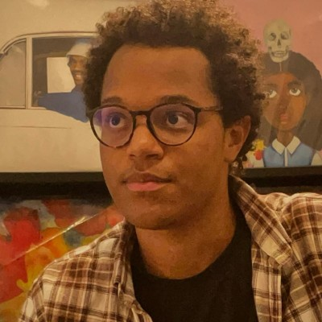
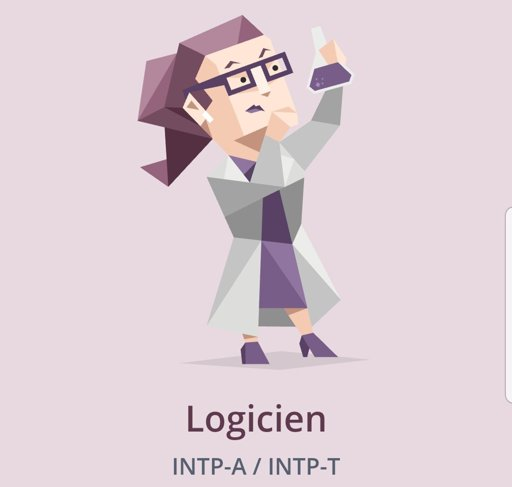
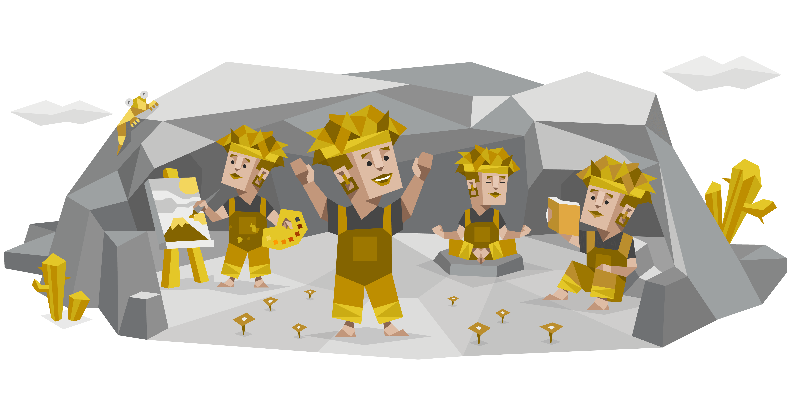
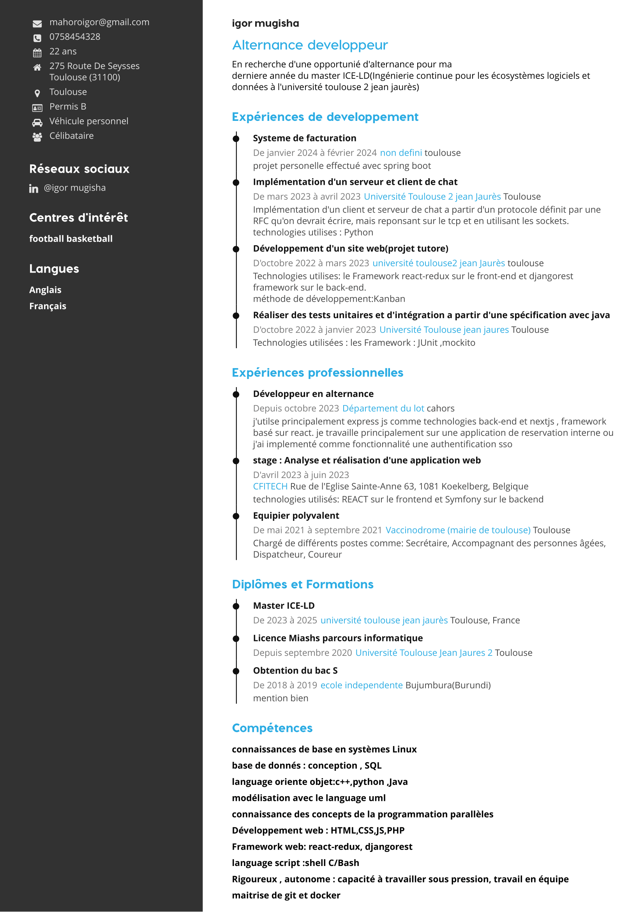
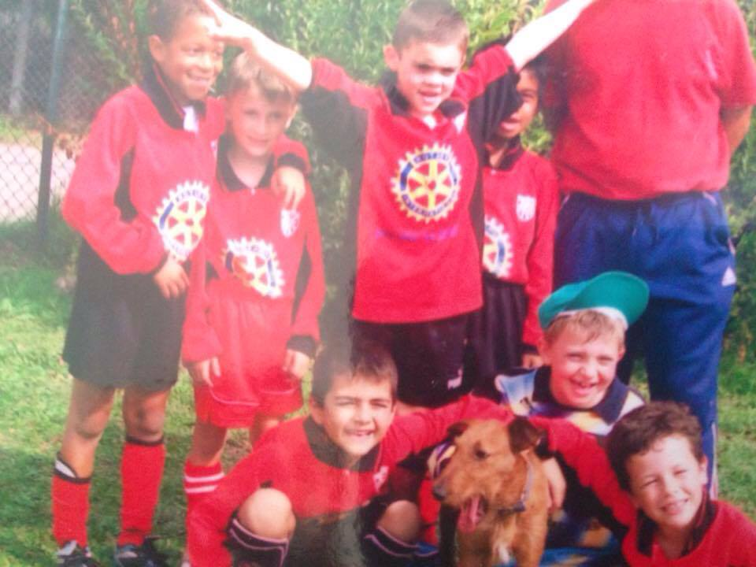
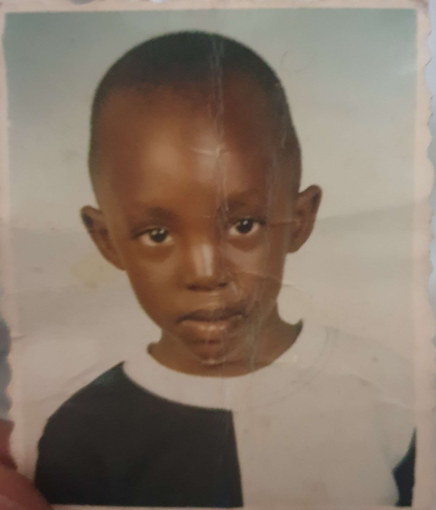
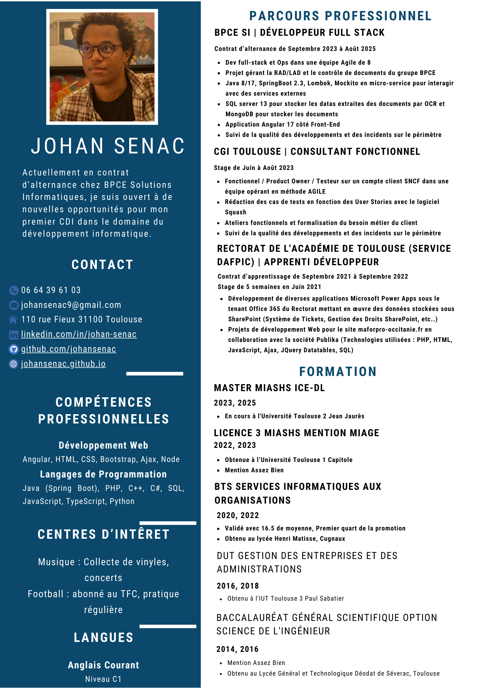

Trier par: top 

Johan Senac
Développeur Full Stack chez BPCE S.I. | Master MIASHS ICE-LD
Il y a 2 heures
J'ai réalisé un test pour en savoir plus sur moi. Le fait d'avoir une personnalité compatible avec mes collègues est très important selon moi.
🔍💡 "L'important est de ne pas arrêter de poser des questions. La curiosité a sa propre raison d'exister." - Albert Einstein
En tant que Logicien, je célèbre aujourd'hui notre quête incessante de compréhension et notre capacité à voir le monde sous un angle unique. Nous sommes animés par une curiosité sans fin, toujours prêts à explorer les mystères de l'univers. Notre esprit bouillonne d'idées et de réflexions, nous plongeant souvent dans une rêverie sans fin.
Vous pouvez cliquer sur l'image pour voir les résultats de mon test en détail.

 Like
Like
 Commenter
Commenter
 Partager
Partager
 Envoyer
Envoyer
Igor Mugisha
Développeur chez département du lot | Master MIASHS ICE-LD
Il y a 3 heures
Suite à un test que j'ai réalisé, j'ai pu en découvrir plus sur moi et les personnes connues qui ont un tempérament similaire au mien. J'ai été "diagnostiqué" comme étant un Aventurier.
🌿🎨 "Chaque jour est une nouvelle aventure pour moi. Au matin, je suis une personne, mais au soir, je suis quelqu'un d'autre." - Bob Dylan
Pour moi, chaque journée est comme une toile vierge, prête à être peinte avec mes expériences uniques. Des choix de vêtements aux activités de mon temps libre, je laisse mon esprit créatif guider mes pas. Je trouve mon bonheur dans les moments d'imprévu et d'émerveillement, sachant que la vie est une aventure constante. En tant qu'Aventurier, je célèbre la flexibilité et l'ouverture d'esprit, embrassant chaque instant avec gratitude et curiosité. #Aventurier #Créativité #Liberté
Vous pouvez cliquer sur l'image pour avoir les résultats complets de mon test si vous voulez en savoir plus sur moi.

Like
Commenter
Partager
Envoyer
Igor Mugisha
Développeur chez département du lot | Master MIASHS ICE-LD
Il y a 2 jours
🚀 À la recherche d'une opportunité d'alternance en développement informatique 🚀
Bonjour à tous,
Je suis Igor Mugisha, un étudiant en dernière année de master ICE-LD (Ingénierie continue pour les écosystèmes logiciels et données) à l'Université Toulouse 2 Jean Jaurès, actuellement à la recherche d'une opportunité d'alternance en tant que développeur.
Avec des expériences solides en développement logiciel et une passion pour l'innovation technologique, je suis désireux de mettre mes compétences au service d'une entreprise dynamique pour contribuer à des projets stimulants.
🔧 Mes compétences incluent :
Connaissances de base en systèmes Linux
Base de données : conception, SQL
Langages orientés objet : C++, Python, Java
Modélisation avec le langage UML
Connaissance des concepts de la programmation parallèle
Développement web : HTML, CSS, JS, PHP
Frameworks web : React-Redux, DjangoREST
Langages de script : Shell, C/Bash
Maîtrise de Git et Docker
💼 Rigoureux et autonome, je suis capable de travailler sous pression tout en favorisant le travail en équipe pour atteindre des objectifs communs.
Si vous avez des opportunités d'alternance dans le domaine du développement informatique, n'hésitez pas à me contacter. Je suis ouvert à de nouvelles collaborations passionnantes !
Merci de votre attention.
Igor Mugisha

Like
Commenter
Partager
Envoyer
Johan Senac
Développeur Full Stack chez BPCE S.I. | Master MIASHS ICE-LD
Il y a 3 jours
Du terrain de jeu au monde professionnel, le football a toujours été ma passion et ma source d'inspiration. Depuis mes premiers pas sur le gazon de Cugnaux jusqu'aux matchs enflammés aux Pradettes, ce sport m'a inculqué des valeurs essentielles : le travail d'équipe, la persévérance et la gestion des hauts et des bas. Ces compétences sont devenues mes alliées dans ma carrière, m'aidant à relever les défis avec détermination et à collaborer efficacement pour atteindre nos objectifs. Le football n'est pas seulement un jeu, c'est une école de vie qui m'a préparé aux exigences du monde professionnel. #Football #TravaildÉquipe #Persévérance

Like
Commenter
Partager
Envoyer
Igor Mugisha
Développeur chez département du lot | Master MIASHS ICE-LD
Il y a 6 jours
En grandissant, j'ai été élevé dans un environnement où la curiosité était encouragée et où la résolution de problèmes était valorisée. Mes premiers pas dans le monde de la technologie ont été guidés par une fascination pour la manière dont les choses fonctionnent et par une soif insatiable de compréhension.
Au fil du temps, j'ai réalisé que cette passion innée pour la technologie pouvait être canalisée vers une carrière enrichissante dans le domaine de l'ingénierie logicielle. J'ai choisi de poursuivre mes études dans ce domaine, et chaque jour depuis lors a été une aventure stimulante et gratifiante.
Aujourd'hui, en tant que développeur logiciel, je puise dans les leçons apprises dans mon enfance au Burundi pour résoudre des problèmes complexes, innover et collaborer avec mes pairs pour créer des solutions qui font avancer le monde. Je suis reconnaissant pour chaque étape de mon parcours qui m'a conduit à ce point, et je suis enthousiaste à l'idée de voir où ma passion pour la technologie me mènera ensuite.
Je suis convaincu que nos expériences passées façonnent notre présent et influencent notre avenir. Je suis reconnaissant d'avoir eu une enfance remplie de découvertes et d'apprentissages qui ont jeté les bases de ma carrière professionnelle.

Like
Commenter
Partager
Envoyer
Johan Senac
Développeur Full Stack chez BPCE S.I. | Master MIASHS ICE-LD
Il y a 3 jours
Après avoir acquis une expérience significative à travers mes stages et contrats en alternance, je suis maintenant prêt à franchir une nouvelle étape dans ma carrière professionnelle. Passionné par le développement full stack, les méthodes agiles et la résolution de problèmes complexes, je suis déterminé à contribuer à des projets innovants.
💼 Actuellement en poste chez BPCE Solutions Informatiques en tant que Développeur Full Stack, j'ai eu l'opportunité de travailler sur des projets stimulants et de collaborer avec des équipes dynamiques.
🔍 Je suis ouvert à explorer de nouvelles opportunités où je pourrai mettre en pratique mes compétences techniques et mon expertise acquise. Je recherche un environnement professionnel qui favorise le développement personnel et professionnel.
💬 N'hésitez pas à me contacter si vous avez des opportunités intéressantes à discuter ou si vous souhaitez en savoir plus sur mon parcours professionnel !
#DéveloppeurFullStack #OpportunitésProfessionnelles #PremierCDI #DéveloppementInformatique #IngénieurLogiciel #PassionnéDeTechnologie

Like
Commenter
Partager
Envoyer
 Mes éléments
Mes éléments Essai Premium
Essai Premium Développement Web
Développement Web Master MIASHS ICE-LD
Master MIASHS ICE-LD springboot
springboot Photo
Photo Video
Video Evénement
Evénement

 Igor Mugisha et 75 autres
Igor Mugisha et 75 autres